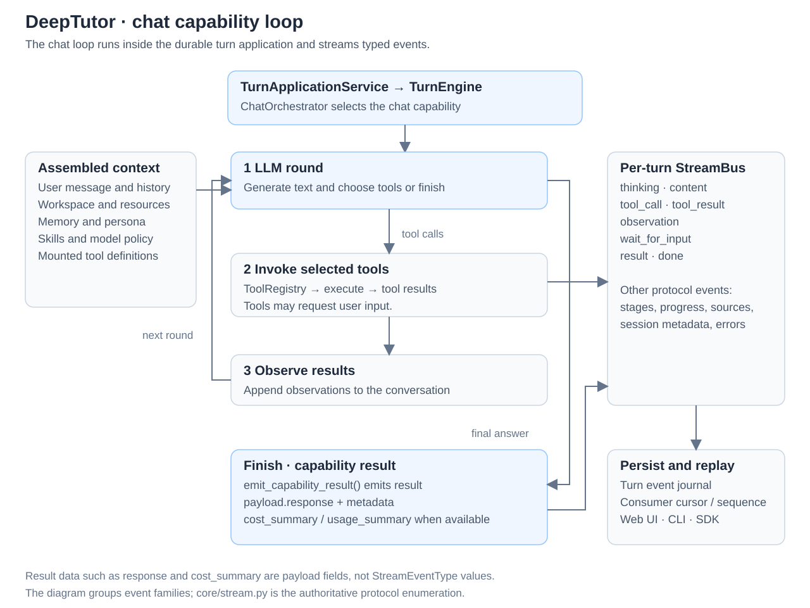

Learning Playground · Tool guide
DeepTutor
Teach from a source, keep a conversation, and inspect the answer the model actually gave. The KV-cache trial pairs one complete tutor turn with a checked reading edition.
Open the corrected reading edition · Read the original tutor response
Try the tutor’s predictions
- Trace a single query. Open the reading edition and work the two-position example. With values 2 and 10 and weights ¼ and ¾, the mix is 8. Replace the query with zero. Equal scores give equal weights, so the result is 6. Say which pieces were reused and which had to be computed again.
- Test the memory rule. At Check Your Prediction, decide what happens when a 4,096-token sequence doubles with eight KV heads. Open the first answer after committing. You should get 1 GiB from the original 512 MiB.
- Separate two different budgets. At the final question, multiply 16,384 tokens by 890 bytes per token. The result is 14,581,760 bytes, about 14.6 MB of global KV storage. Identify another memory cost, such as each layer’s local window, before revealing the explanation.
- Compare with the model’s text. Open the original Markdown alongside the reading edition. Find where the original text described the fifth token while summing only four positions. Count the eligible positions after the current key and value have been appended.
What a tutoring session can do
- Core Chat
- Ask for an explanation, supply a source passage, or continue an existing session with a follow-up. The core package also includes Ask Questions. A conversation can preserve relevant history across turns.
- Grounded reading
- In the larger workspace, an indexed knowledge base can supply passages. Immersive Reading, notebooks and materials give learners a place to inspect sources and keep working notes. Indexed retrieval needs the relevant module and an embedding provider.
- Practice and longer work
- The full installation offers guided mastery, practice questions, books, research and visualization. An installed capability determines which tools and resources are available. The CLI can report the module state before a learner tries a mode.
Inside a tutor turn

Web, terminal and SDK use a common turn engine. It assembles context and the available tool definitions, dispatches the selected capability, and records typed events for its consumers. Chat can run another model round after observing a tool result or can finish directly. A session ID and the recorded events make follow-up turns and post-run inspection possible.
For this case, generation used the shared guide supplied directly in the message. The saved completion event identifies one round, zero tool steps and a completed response. Those fields distinguish the actual run from the larger product’s retrieval and orchestration options. Turn engine · Stream event definitions.
Run a new English turn
From a playground checkout use Git, uv and Python 3.11. Start Ollama and provide the trial model, qwen3.5:35b. The installer builds the pinned core wheel. The following uses the playground runtime, creates a temporary directory, and exports only the final answer into the lesson file.
./install.sh deeptutor
export DEEPTUTOR_HOME="$PWD/.local/tools/deeptutor/runtime"
dt="$PWD/.local/tools/deeptutor/environment/.venv/bin/deeptutor"
"$dt" doctor --format json
tmp=$(mktemp -d)
python3 tools/deeptutor/case.py prompt > "$tmp/prompt.md"
"$dt" run chat "$(cat "$tmp/prompt.md")" --language en --format json > "$tmp/events.ndjson"
python3 tools/deeptutor/case.py answer "$tmp/events.ndjson" > "$tmp/lesson.md"
echo "$tmp/lesson.md"Read the Markdown in the printed file. Expect a new response to the same material. For an interactive conversation, run "$dt" chat --language en. To continue a generated lesson use the session_id returned by its done event with --session. CLI options and capabilities.
The model answer and the edits
On November 24, 2026 we used DeepTutor 1.7.4 and local Qwen. A Python-to-Ollama connection failed, so we passed the CLI’s exact HTTP request through curl and returned the reply to the upstream parser. The agent loop completed. The receipt records 5,219 prompt tokens and 2,923 completion tokens. The separate title-generation call and buffered delivery make this trial unsuitable for timing comparisons.
The original Markdown got the two mixtures and the dense memory table right. The playground reading edition corrected the current-token sum, separated a toy 32-layer configuration from DeepSeek’s 40 layers, and corrected unsupported claims about quality and allocator overhead. The source already contained worked answers. Retrieval, web UI, mastery checks, quiz generation and adaptation over multiple replies remain untested in this trial.
The learner named DeepTutor among three favorites on November 24, 2026. No individual score or favored component has been recorded. Completion receipt · Run details and corrections.